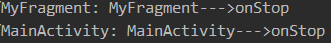

同一个界面在手机上显示很正常也很好看（前提是你做的好看^-^）,但是在平板上就不好说了，界面被拉长，控件之间间隙很大难看，那么怎么办呢？没错，就是Fragment
在Android中显示界面都是通过Activity，相信大家对Activity一点都不陌生吧，是不是早已烂熟于胸，这里我们就不过多解释。但是Activity并不是我们想象的那么好，Activity也是有局限性的，同一个界面在手机上显示很正常也很好看,但是在平板上就不好说了，它们两者之间的大小尺寸各不相同（自己脑补..），界面被拉长，控件之间间隙很大很难看，那么我们就没有解决的办法吗？别担心万能的google在Android3.0已经为我们引入了Fragment，Fragment可以让界面更好的在平板上显示，它与Activity很类似，同样可以包含布局。通常Fragment与Activity是嵌套使用，所以Fragment的生命周期与它所在的Activity密切相关。
Fragment生命周期详解
首先来一波官方文档提供的图片
这里在放一张Activity与Fragment之间的生命周期对比图
是不是一目了然，为了更好的体现，我们自己用代码实现，好了废话不多说，上代码：
MainActivity.java的布局文件

MainActivity.java

- MyFragment.java

看一下跑起来的Log信息：
- 按下HOME时（打开其它程序或者接电话）程序后台运行时：

- 重新进入程序：
- 按返回键退出程序：
从上面可以看出Fragment和Activity的生命周期很相似，只有个别是不相同的，如下：
- onAttach方法：Fragment和Activity建立关联的时候调用（获得activity的传递的值）
- onCreateView方法：为Fragment创建视图（加载布局）时调用（给当前的fragment绘制UI布局，可以使用线程更新UI）
- onActivityCreated方法：当Activity中的onCreate方法执行完后调用（表示activity执行oncreate方法完成后会调用此方法）
- onDestroyView方法：Fragment中的布局被移除时调用（表示fragment销毁关联的UI布局）
- onDetach方法：Fragment和Activity解除关联的时候调用（脱离activity）
ok,Fragment生命周期到这里就结束了，是不是很简单！
Fragment之间通信
我们知道，Activity之间是可以进行通信的，而且有多种通信方法，相信大家多多少少都掌握了几种，这里我们就不过多解释。一个Activity可以包含多个Fragment，那么，大家不知道有没有想过Fragment之间是否可以通行，答案是肯定的，那么问题来了怎样进行通信？
其实他们之间通信很简单，我们在这里就讲其中一种，其它的方法有兴趣的朋友可以去研究研究，两个Fragment之间通信我们必须要经过Activity这个桥梁，上面我们已经讲了Fragment是依赖于Activity,那么我们可以通过getActivity来获取关联的Activity的方法，这样我们就很容易实现他们的通信。这样说可能不是很清楚，我们通过一个Demo来理解，老规矩还是上代码。
- 先看要完成的效果图，有图有真相：
- 目录结构(java + 布局)：
LeftFragment.java核心代码
RigntFragment.java核心代码
MainActivity.java核心代码
leftfragment.xml
rightfragment.xml
activty_main.xml
这里我在啰嗦几句,MainActivity包含两个Fragment,这里采用的是静态加载Fragment,可想而知，既然有静态那么肯定也有动态，如果小伙伴们不清楚这两种用法可以留言或者自己问google,细心的朋友可能发现我在讲生命周期那一点时加载Fragment的方式跟这里不同，没错，就是动态加载。
OK！大功告成，Fragment探索告一段落，当然Fragment肯定不止这一点，更多的功能待大家去挖掘。下篇文章我们再见^-^
每日一碗鸡汤
别受了点伤就一蹶不振，毕竟未来还有许多大风大浪等待着你去乘风破浪。